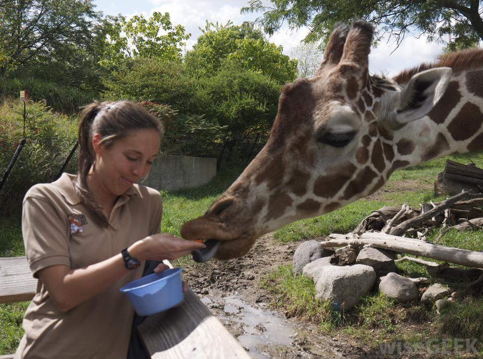

USA Softball is the official governing body to ensure there is guidance and stability to the game.
Formerly known as the Amateur Softball Association (ASA) since it's start in 1933. Now USA Softball has
over 120,000 teams that represent everyone. USA Softball strives to be an inspiring softball community that promotes growth and
development not just for the sport but for the players.
Learn more about USA Softball.
Softball
Houston, Texas Skyline on a bright beautiful sunny day!

Zoologist not just care for animals, they study animal behaviors in both their natural habitats and in controlled
environments like in a zoo. Zoologist help us understand an animal and gives us a greater inside to their behaviors, patterns, and
their ecological roles in their ecosystem. There are many different types of Zoologist that you can study for.
See the full list of specific Zoologist roles.
Zoologist